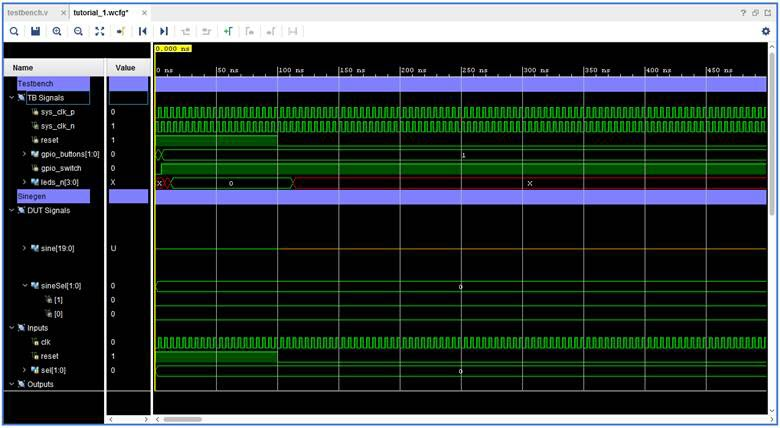

Vivavo Simulator
Línea de comandos
Fases
Ejemplo
Intro
Icarus Verilog: iverilog
Cadence Incisive: irun
Cadence Xcelium: xrun
Synopsys Verilog Compiler Simulator: vcs
Xilinx Vivado: vivado

Vivado
Es un simulador de HDL que realiza simulaciones conductuales, funcionales y de tiempo para VHDL, Verilog y diseños mixtos.
Cuenta con los siguientes componentes:
xvhdl/xvlog: lee archivos VHDL y Verilog y los guarda en librerías HDL en disco.
xelab: elaborador y linker. Dado una unidad top-level, carga las sub unidades del diseño y las covierte en código ejecutable (exe sim snapshot)
xsim: comando para cargar un ejecutable (exe sim snapshot) y lanzarlo en modo batch, gui o tcl interactivo.
IDE: ambiente integrado para edición de diseños con interface de usuario para simulación.


xvlog
xvlog -sv --incr /home/developer/code/counter/rtl/counter.v -i /home/developer/code/counter/rtl
xvlog -sv --incr /home/developer/code/counter/dv/tb.v -i /home/developer/code/counter/dv -i /home/developer/code/counter/rtl

{kind=link}
{kind=link}